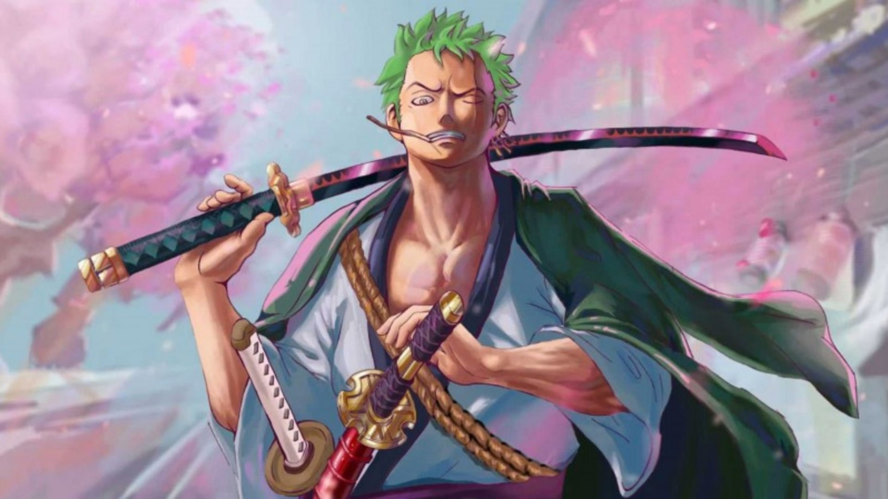
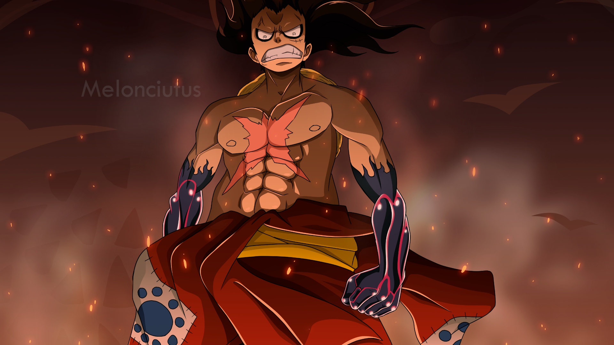

One Piece
Băng Mũ Rơm
Chơi khô máu
After two members joined, the third Straw Hat member, Usopp, drew and perfected the Jolly Roger as well as the crew's pirate flag. Jolly Roger of the Straw Hats is quite simple, consisting of the traditional pirate skull symbol and the Straw Hat based on the crew's name. In addition to the flag, Jolly Roger also appeared on the Going Merry and the Thousand Sunny.
How many crew members the Straw Hats have is something that many moviegoers wonder. Up to now, 9 members have joined the crew, including: Swordsman Roronoa Zoro, chef Vinsmoke Sanji, ship driver Jinbei, archaeologist Nico Robin, shipbuilder Franky, doctor Tony Tony Chopper, musician Brook, navigator Nami, gunner Usopp. Each member possesses different strengths and is often the best in his field.
Roronoa Zoro
Monkey D.Luffy
Vinsmoke Sanji
.png)
Chơi khô máu
| Name | Position | Bounty Beri |
|---|---|---|
| Monkey D.Luffy | Captain | 1.500.000.000 beri |
| Roronoa Zoro | Swordsman & Mate | 320.000.000 beri |
| Vinsmoke SanJi | Chef & Mate | 330.000.000 beri |
| Usoop | Archer | 200.000.000 beri |
| Nico Robin | Archaeologist | 130.000.000 beri |
| Franky | Shipwright | 94.000.000 beri |
| Brook | Musician | 83.000.000 beri |
| Nami | Navigator | 66.000.000 beri |
| Tony Tony Chopper | Doctor | 100 beri |
| Jinbei | Train driver | 438.000.000 beri |
Chơi khô máu